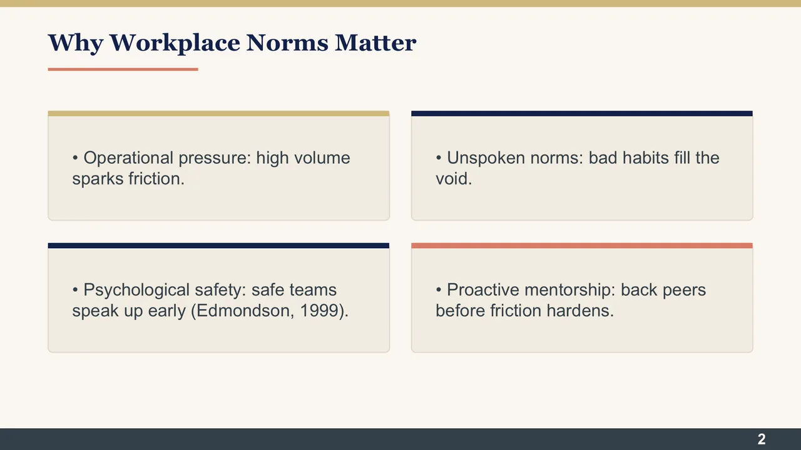

Educational Initiatives & Interactive Curriculum Lab
How I translate statutory mandates (Title VI, Title VII, Title IX, ADA, PWFA, FMLA/FAMLI, Clery/VAWA) and peer-reviewed prevention science into trauma-informed, WCAG 2.2 AA accessible curricula, tabletop behavioral simulations, and psychometrically paired pre/post evaluations across student services, academic medicine, graduate public health, and AI literacy workshops.
Interactive Slide Deck Showcase
Select an educational initiative to step through approved visual slides, facilitator talking points, and accessibility/evidence notes.

Tip: Focus the slide viewer and use Left / Right arrow keys to step through slides.
Student Services · Day 1 (60 Min)
Why Workplace Norms Matter
Instructional Purpose & Timing
Sets psychological safety foundation during high-volume student registration and financial aid cycles.
Facilitator Talking Points
Connects everyday operational queue friction to Edmondson (1999) team psychological safety so staff view norms as workflow infrastructure rather than abstract policy.
Accessibility & Evidence Guardrails
13.333 x 7.5 in widescreen canvas; >= 18pt body text; <= 40 words per slide face.
Learning Objectives & Pre/Post Evaluation Matrix
Curriculum alignment linking Bloom’s Taxonomy objectives, matched pre/post items (Wilcoxon signed-rank / Cohen’s d), and the CDC 6-Step evaluation framework.
Define healthy workplace norms and identify the four distinct types of workplace conflict (Task, Process, Status, Relationship), recognizing which poses the greatest systemic risk to team trust.
Pre-Test: Pre Q4 & Q5: Baseline understanding of healthy norms & 4 conflict types
Post-Test: Post Q3 & Q4: Increased norm awareness & distinguishing productive vs. toxic conflict
Construct: Normative Culture & Conflict Taxonomy Literacy (Wilcoxon signed-rank)
Differentiate between productive professional debate (task/process) and toxic interpersonal friction (relationship/status), assessing how queue bottlenecks impact team communication.
Pre-Test: Pre Q6: Baseline autonomy to build respectful cross-role relationships
Post-Test: Post Q5: Enhanced confidence navigating difficult colleague conversations
Construct: Relational Self-Efficacy & Diagnostic Acuity
Apply the 5 Ds of Bystander Intervention (Direct, Distract, Delegate, Delay, Document) to interrupt everyday incivility and de-escalate tension in peer and student encounters.
Pre-Test: Pre Q7 & Q8: Baseline de-escalation skills & readiness to step in
Post-Test: Post Q6 & Q7: Increased actionable verbal tools & 5 Ds self-efficacy
Construct: Collaborative De-escalation & Upstander Self-Efficacy
Practice collaborative problem-solving across four tabletop perspectives (Complainant, Respondent, Witness 1, Witness 2) to build empathy and shared accountability.
Pre-Test: Pre Q3: Preferred experiential learning modalities
Post-Test: Activity evaluation: Perceived scenario realism & seat reflection
Construct: Experiential Perspective-Taking Fidelity
Identify how peak-season operational pressures (VUCA) during registration, census date, and disbursement cutoffs amplify interpersonal friction, coverage resentment, and counter escalation.
Pre-Test: Pre Q1: Recognizing seasonal VUCA pressure on incivility
Post-Test: Post Q4: Understanding how VUCA surges affect team communication
Construct: Situational Awareness & Stress Drivers (Cernega et al., 2024)
Apply the 5 Ds Upstander Framework to formulate an immediate, constructive verbal redirect when witnessing leave-related hostility (FMLA/ADA/PWFA) or frontline student profiling (Title VI).
Pre-Test: Pre Q2 & Q3: Recognizing subtle leave hostility & redirect confidence
Post-Test: Post Q3 & Q5: Hostile environment acuity & 5 Ds redirect self-efficacy
Construct: Accommodation Climate & Active Upstander Self-Efficacy
Distinguish between immediate de-escalation (The Moment), empathetic peer check-ins (The Person), and leadership loop-closure (The System) to fix workload bottlenecks without targeting accommodated peers.
Pre-Test: Pre Q4: Understanding systemic resolution & leadership loop-closure
Post-Test: Post Q6: Navigating all three layers (Moment, Person, System)
Construct: Systems-Based Accountability
Understand the affirmative Duty to Report under Title VI, Title IX, PWFA, and ADA, navigating department leadership, Ombuds, and Office of Equity while recognizing strict anti-retaliation protections.
Pre-Test: Pre Q5: Clarity on Duty to Report & anti-retaliation rules
Post-Test: Post Q7: Confidence in reporting doors & supportive measures
Construct: Institutional Compliance Literacy (APS 5065)
Identify how clinical VUCA conditions (stat add-on surges, sign-out handoffs, hierarchy) amplify workplace incivility and create psychological barriers to intervening.
Pre-Test: Pre Item 1: Recognizing VUCA impact in clinical care
Post-Test: Post Item 4: Knowledge gain on clinical VUCA communication
Construct: Clinical Situational Awareness
Apply executive coaching principles and the 5 Ds to formulate an immediate, constructive redirect in response to a microaggression in both public/group and one-on-one settings.
Pre-Test: Pre Item 2 & 3: Microaggression recognition & coaching confidence
Post-Test: Post Item 3 & 5: Subtle slight recognition & setting-adapted redirect
Construct: Executive Coaching & Upstander Self-Efficacy
Evaluate multi-layered resolution pathways (Immediate, Same-Day, Systemic) to move beyond temporary fixes toward clinical departmental accountability.
Pre-Test: Pre Item 4: Baseline understanding of post-incident follow-through
Post-Test: Post Item 6: Ability to articulate 3-layer accountability
Construct: ACGME Systems-Based Practice
Identify the designated Department Trusted Advisor and institutional escalation channels (Office of Equity, GME, Title IX, ADA/504) for confidential or formal support.
Pre-Test: Pre Item 5: Baseline knowledge of local reporting doors
Post-Test: Post Item 7: Clarity on Trusted Advisor & escalation paths
Construct: Clinical Resource Literacy (Fard et al., 2025)
Evaluate whether Title IX jurisdiction (34 C.F.R. Part 106) covers off-campus digital harassment and non-consensual AI-generated synthetic imagery limiting equal program access.
Pre-Test: Pre KNOW1-2: Binary legal knowledge items (SGIC paired)
Post-Test: Post KNOW1-2: Paired McNemar / Wilcoxon legal accuracy gain
Construct: Digital Title IX & AI Harassment Literacy
Demonstrate digital bystander intervention self-efficacy (EFF1-6) and behavioral intent (INT1-4), including forensic screenshot documentation and indirect distraction in group chats.
Pre-Test: Pre EFF1-6 & INT1-4 (5-pt scales)
Post-Test: Post EFF1-6 & INT1-4 (Target Cohen's d >= 0.40, N >= 48)
Construct: Digital Bystander Efficacy (Banyard 2007; Kettrey 2019)
Differentiate 100% legally confidential resources (Campus Ombuds, Mental Health) from private reporting channels and explain standalone supportive measures for GTAs/GRAs.
Pre-Test: Pre KNOW3-5 & DIS1-4 (Retaliation fear subscale)
Post-Test: Post KNOW3-5 & DIS1-4 (Reduced retaliation fear)
Construct: Disclosure Attitude & Retaliation Safety (Fard et al., 2025)
Unify the 5 Ds bystander model with BRAVE trauma-informed support principles across 52 Common Cartridge (.imscc) pages tailored to both students and clinical trainees.
Pre-Test: Baseline course audit across two legacy sandboxes
Post-Test: Merged 52-page course with woven APA 7 research evidence
Construct: Evidence-Informed Curriculum Synthesis
Audit 100% of curriculum research citations against live Crossref/OpenAlex records and Section 508 / WCAG 2.2 semantic HTML rules while locking policy statements verbatim.
Pre-Test: Pre-audit unverified citations & inaccessible layouts
Post-Test: 100% verified citations + zero-drift policy preservation
Construct: Chain-of-Evidence & Accessibility Governance
Pre/Post Construct Pairing & Anonymous SGIC Method
Select a psychometric construct to inspect matched baseline/summative survey items and why anonymous Self-Generated Identification Codes (SGIC) replace superficial satisfaction polls.
1. Baseline (T0 Pre-Test)
Pre-Test Item (Q5): 'I can identify the four distinct types of workplace conflict (task, process, status, relationship) and recognize which type poses the greatest danger to team morale.' (5-pt Likert)
2. Summative (T3 Post-Test)
Post-Test Matched Item (Q4): 'This session improved my ability to distinguish productive task/process debate from destructive relationship conflict.' (Wilcoxon signed-rank paired test)
3. CDC 6-Step Rationale
Why pair anonymously via SGIC? Pairing pre/post items with a non-reversible Self-Generated Identification Code (2 letters of guardian first name + 2-digit birth day + last 2 digits of mobile) measures genuine within-person shift without collecting names or student IDs.
Interactive Activity Materials & Tabletop Simulator
Rehearse bystander intervention and systemic reporting routes without canned scripts. Ground rules: practice space only; 4 of the 5 Ds are indirect by design.
Choose a Sanitized Tabletop Scenario Card
Card F1: "The Coverage Plan"
Registrar's office. Denise, a records specialist, has an approved FMLA/FAMLI bonding leave starting in two weeks. During a public staff meeting, her supervisor jokes about 'all taking a leave.' Later, privately in an office, the supervisor pressures her to delay leave until after the audit and hints her projects may change.
Four Tabletop Seats
Complainant
Denise — records specialist with approved bonding leave
Respondent
Marcus — assistant registrar pressuring leave timing
Witness A
Tanya — office lead who heard the meeting remark; influences scheduling
Witness B
Priya — colleague who knows the timeline & leave emails; peer rank
Scene Script Up to Freeze
Supervisor (staff meeting): "So who's actually doing the work while Denise is out? Maybe we should all take a leave."
Denise: (looks down at her notes; says nothing)
Supervisor (private office, later): "Hold the leave until after the audit — it's only six weeks. Honestly, maybe take less time. I can't promise your projects will look the same when you're back."
▶ FREEZE POINT — The supervisor waits for an answer. The coverage calendar is on the wall.
The Two-Rooms Switcher
What the Room Gives You
Social proof, multiple witnesses in earshot, and an immediate chance to reset office norms.
What the Room Takes Away
Denise is exposed in front of peers; awkward silence spreads if nobody redirects.
Best-Fit 5 Ds Move
Use Distract ('Let's walk through the cross-training coverage schedule') or a brief calm Direct ('Leave approval belongs to Employee Services, not this meeting'). Document afterward.
Draft Your Own Words
Local browser onlyNo canned scripts are handed out in training; participants adapt phrasing to their own authentic voice.
Resolution Map: Card F1: "The Coverage Plan"
An interrupted incident without a routed follow-up leaves the harmed colleague carrying the burden alone.
Interrupt public coverage joke by pivoting to objective cross-training planning; pause pressure without escalating publicly.
Channel: Staff meeting / direct floor conversation
Private Delay check-in with Denise; validate that coverage planning is leadership's job, not hers; log exact dates and verbatim statements.
Channel: Private 1-on-1 check-in + timestamped personal notes
Clarify unit policy: supervisors never negotiate approved FMLA/FAMLI timing; redistribute peak workload equitably without penalizing returning staff.
Channel: Employee Services Leave Team · HR · [Institutional Office of Equity]
Peer Coaching Question Bank (Ask, Don’t Tell)
Select any coaching prompt to reveal its facilitation objective during the 90-second paired exchange.
"What did you see and hear?"
Grounds the conversation in observable facts before assumptions or emotions drive the reporting route.
"Which of the 5 Ds feels safe for you — in public, and one-on-one?"
Normalizes indirect intervention options and helps the colleague notice how room safety shifts.
"What is ONE thing you could do before you leave today?"
Translates awareness into a concrete, time-bound micro-commitment (e.g., Delay check-in or writing dated notes).
"Who else should know — and what do you need to go with them?"
Prepares consent-first Delegation and accompaniment so no affected person walks to a reporting office alone.
Duty to Report: Private vs. Confidential
- Responsible Employees: Promptly route potential protected-class discrimination, harassment, sexual misconduct, or retaliation to the [Institutional Office of Equity].
- Honesty About Confidentiality: Supervisors and responsible employees operate privately, not legally confidentially. Explain what you can protect and share exact confidential options (e.g., Campus Ombuds, Employee Assistance Program, Confidential Victim Advocates).
- Standalone Supportive Measures: Accommodations, schedule adjustments, and no-contact directives remain available without requiring a formal disciplinary complaint.
Visual Pedagogical Models & Multi-Harness QA Architecture
Deterministic SVG diagrams designed for WCAG 2.2 AA contrast alongside the multi-agent quality assurance pipeline documented across Antigravity, Hermes Agent, Claude Code, Codex, and LM Studio Bionic sessions.
Deterministic Instructional SVG Diagrams (8 Models)
Multi-Harness Curriculum Engineering & Quality Gates
Stage-Gated Course Redesign (Respect Expected 3.0)
Separated written scope rules, 21 peer-reviewed PDFs, live Crossref/OpenAlex citation checks, and 52-page Common Cartridge (.imscc) packaging while keeping official statutory policy pages byte-locked.
6-Step Editorial Voice & Accuracy Guard
Combines deterministic text-pattern counting with 6 plain-text editorial gates across 8 communication modes so educational handouts keep human warmth without silently inflating hedged research claims.
Three-Critic Independent Audit Loop
Runs deterministic layout checks (18pt minimum slide body font, contrast, bounds) alongside 3 independent visual critics that caught participant handouts accidentally printing facilitator answers before distribution.
Knowing When to Skip AI ($0 Deterministic Hygiene)
Audits 43,802 local workspace files into a read-only Excel report with zero autonomous deletions and zero LLM token cost—reinforcing that deterministic scripts handle housekeeping while educators own judgment.